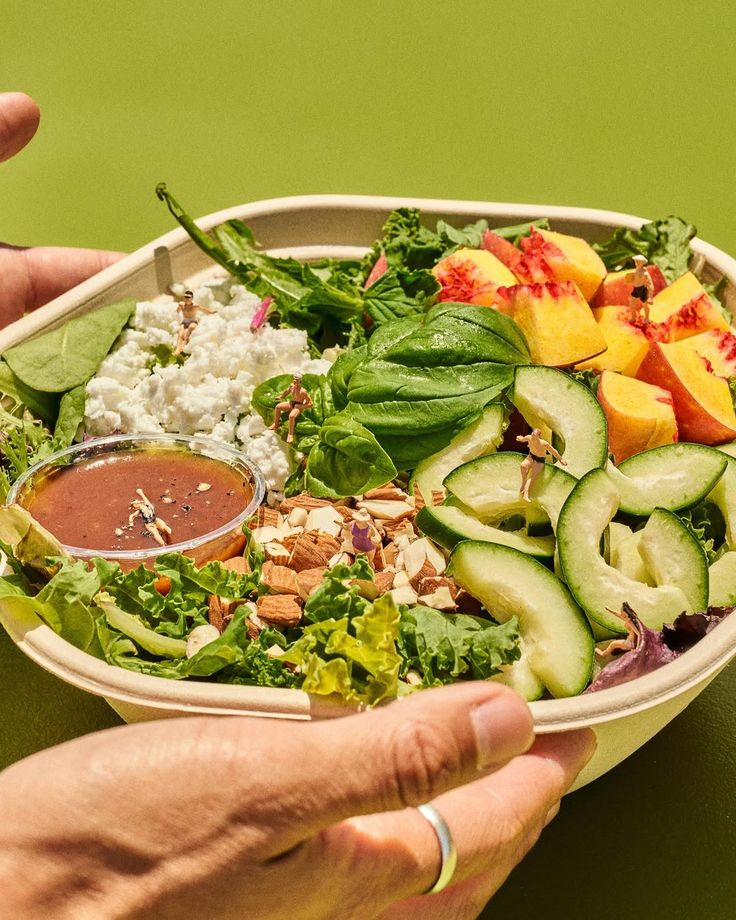
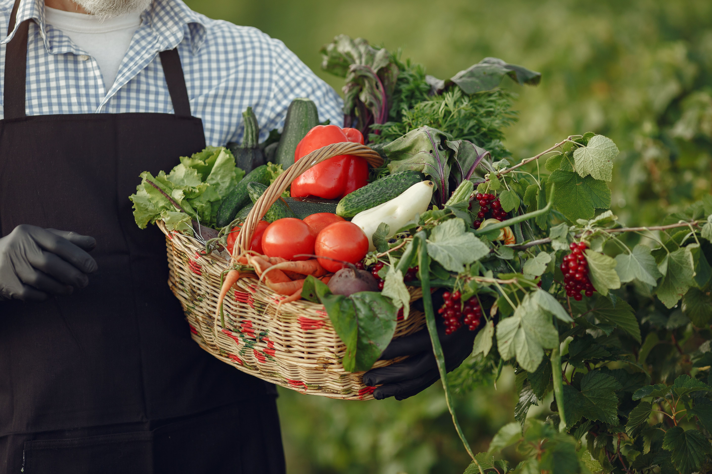
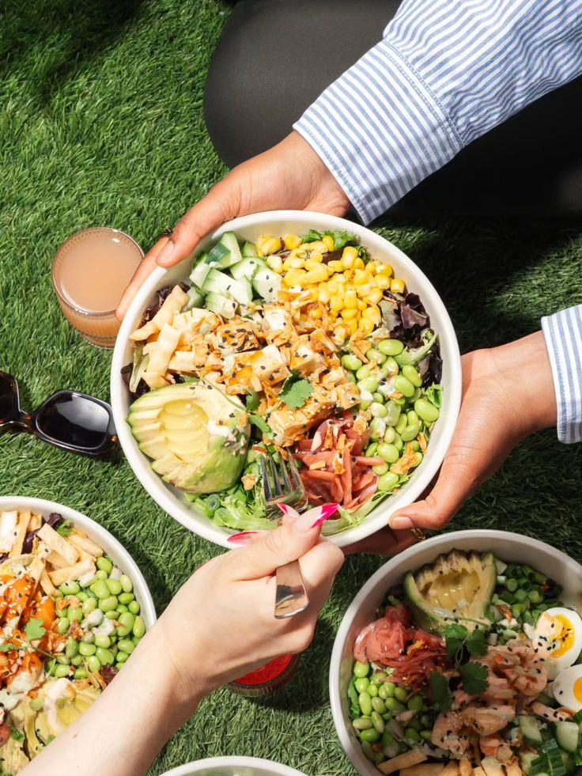
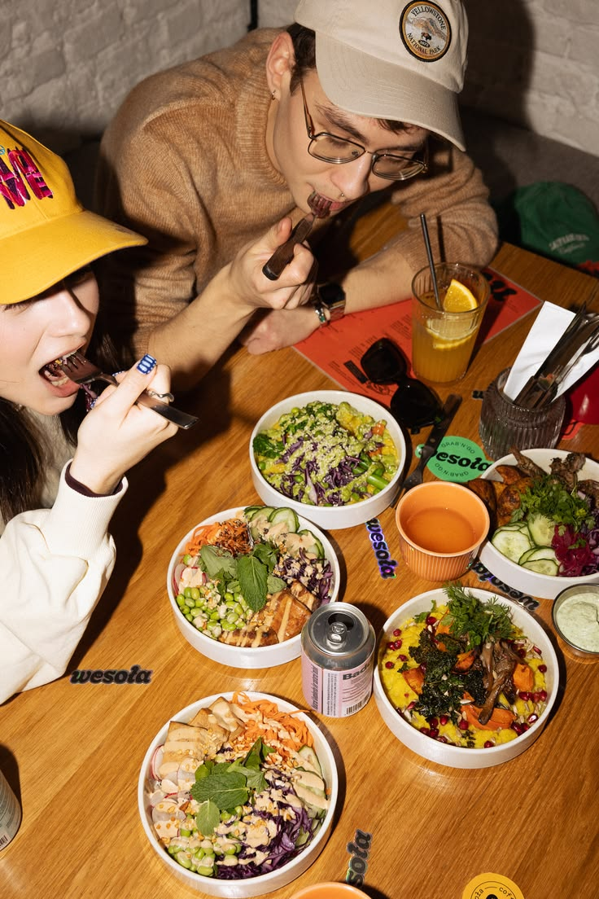
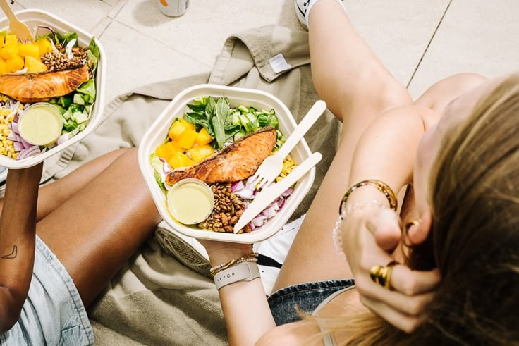
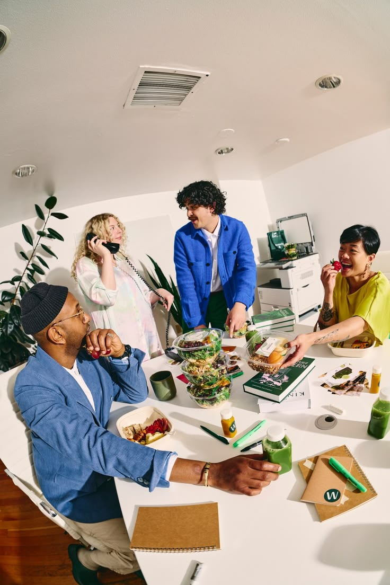
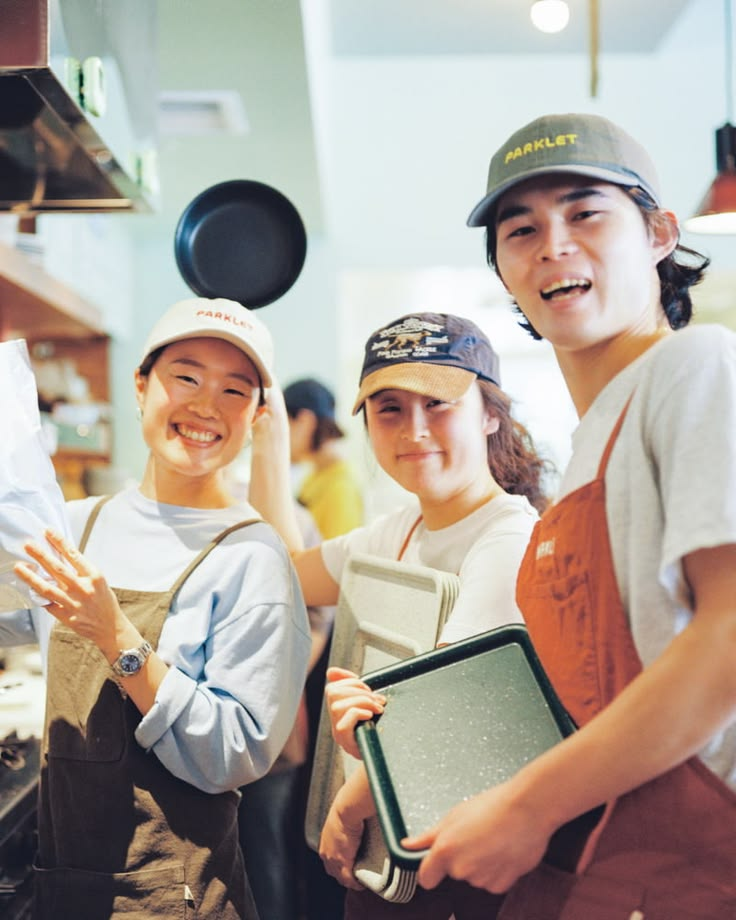

Ensaladas de Temporada
Este invierno prueba las nuevas enseladas de temporada y ármala a tu gusto.
Ver el menúLos Más Vendidos


Novedades

Comunidad

Del Campo a la Cocina
Conoce los ingredientes con los que preparamos cada ensalada y aprende sobre su valor nutrimental y el proceso de recolección de cada cosecha. Trabajamos con productores locales que cultivan sus verduras y hortalizas de temporada, para que lleguen frescas desde el campo hasta tu plato. Descubre qué aporta cada ingrediente a tu día, desde las fibras y vitaminas de las hojas verdes hasta la proteína de los garbanzos, y arma tu ensalada con la combinación que mejor se adapte a ti.





Comparte tus favoritos
Cuéntanos qué ensalada te gusta más y comparte tu combinación con la comunidad. Tus recomendaciones ayudan a otros a descubrir nuevos sabores en cada temporada.